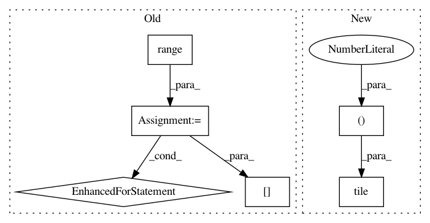

c57ce7f891a91592354b1685d37f2aee39f193f2,libact/query_strategies/active_learning_by_learning.py,Exp4P,exp4p,#Exp4P#,160
Before Change
ask_idx = self.invert_id_idx[ask_id]
rhat[ask_idx] = reward / p[ask_idx]
for i in range(self.N):
yhat[i] = np.dot(advice[i], rhat)
vhat[i] = np.sum(advice[i] / p)
self.w[i] = self.w[i] * np.exp(
self.pmin / 2 * (yhat[i] + vhat[i]*np.sqrt(
np.log(self.N/self.delta) / self.K / self.T)
)
)
self.t += 1
raise StopIteration
After Change
// )
// )
yhat = np.dot(advice, rhat)
vhat = np.sum(advice / np.tile(p, (self.N, 1)), axis=1)
self.w = self.w * np.exp(
self.pmin / 2 * (yhat + vhat*np.sqrt(
np.log(self.N/self.delta) / self.K / self.T)
In pattern: SUPERPATTERN
Frequency: 3
Non-data size: 6
Instances
Project Name: ntucllab/libact
Commit Name: c57ce7f891a91592354b1685d37f2aee39f193f2
Time: 2015-10-07
Author: yangarbiter@gmail.com
File Name: libact/query_strategies/active_learning_by_learning.py
Class Name: Exp4P
Method Name: exp4p
Project Name: ntucllab/libact
Commit Name: 5dd5b8652f28426322309c4e983c94a3caa8fa8e
Time: 2014-12-19
Author: yangarbiter@gmail.com
File Name: libact/query_strategies/variance_reduction.py
Class Name: VarianceReduction
Method Name: A
Project Name: fgnt/pb_bss
Commit Name: f9ead8dbcf9737b9740c5ed89c4c5843a707274d
Time: 2019-08-01
Author: cbj@mail.uni-paderborn.de
File Name: pb_bss/evaluation/wrapper.py
Class Name: InputMetrics
Method Name: stoi